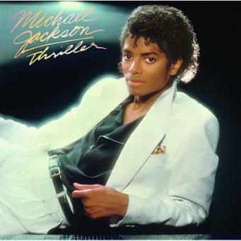
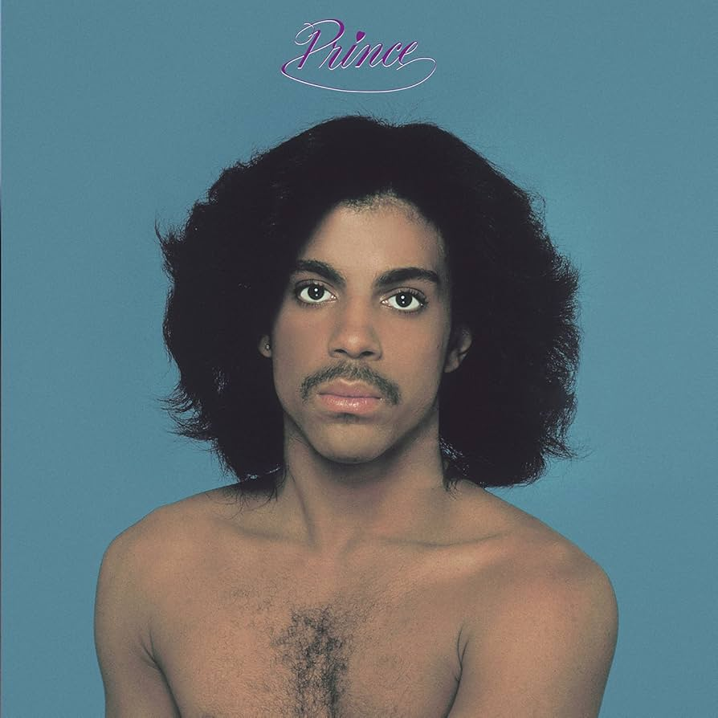

Michael Jackson, nacido en Indiana (EE. UU.) en 1958, fue un cantante, compositor y bailarín, conocido como el “Rey del Pop”. Revolucionó la música con álbumes como Thriller (el más vendido de la historia) y videoclips innovadores. Ganó 13 premios Grammy, un Grammy Legend Award, un Grammy Lifetime Achievement y múltiples American Music Awards, además de entrar en el Salón de la Fama del Rock and Roll.>

Prince, nacido en Minneapolis (EE. UU.) en 1958, fue un cantante, compositor, multiinstrumentista y productor, considerado un genio del pop, funk, soul y rock. Saltó a la fama con álbumes como Purple Rain y 1999. Ganó 7 premios Grammy, un Oscar (por Purple Rain), un Globo de Oro y fue incluido en el Salón de la Fama del Rock and Roll.